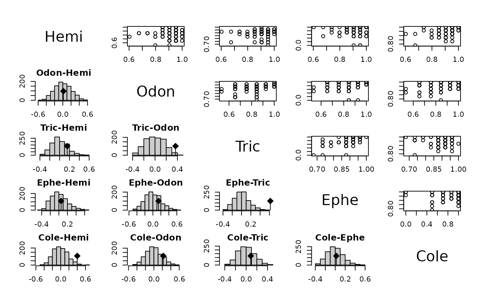
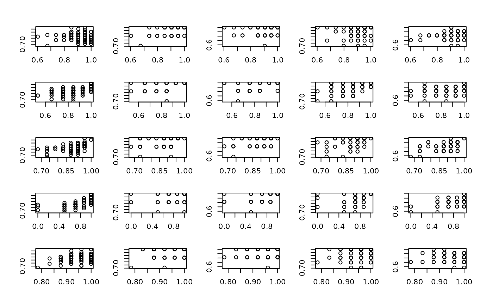
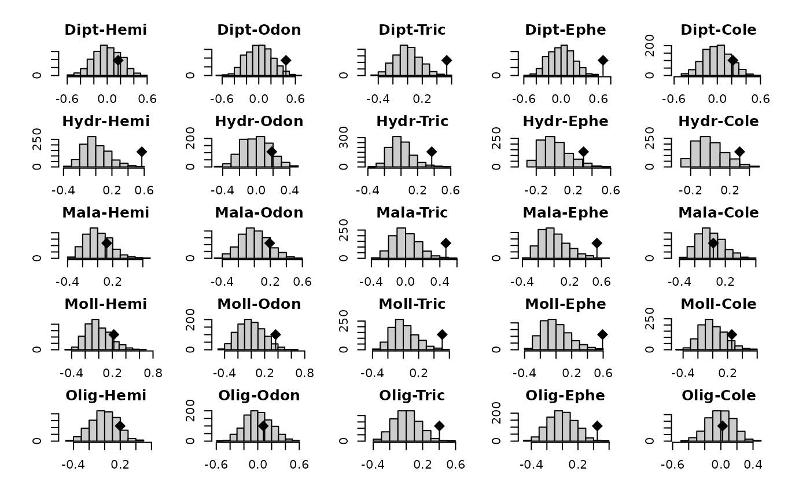
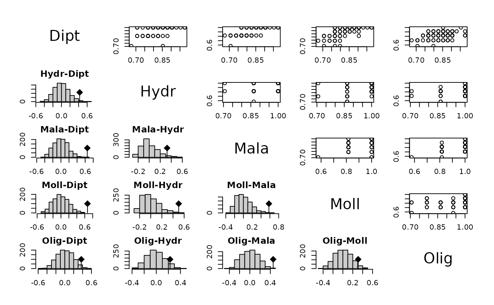
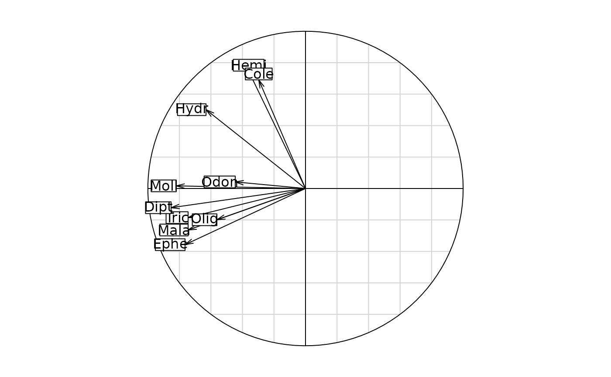
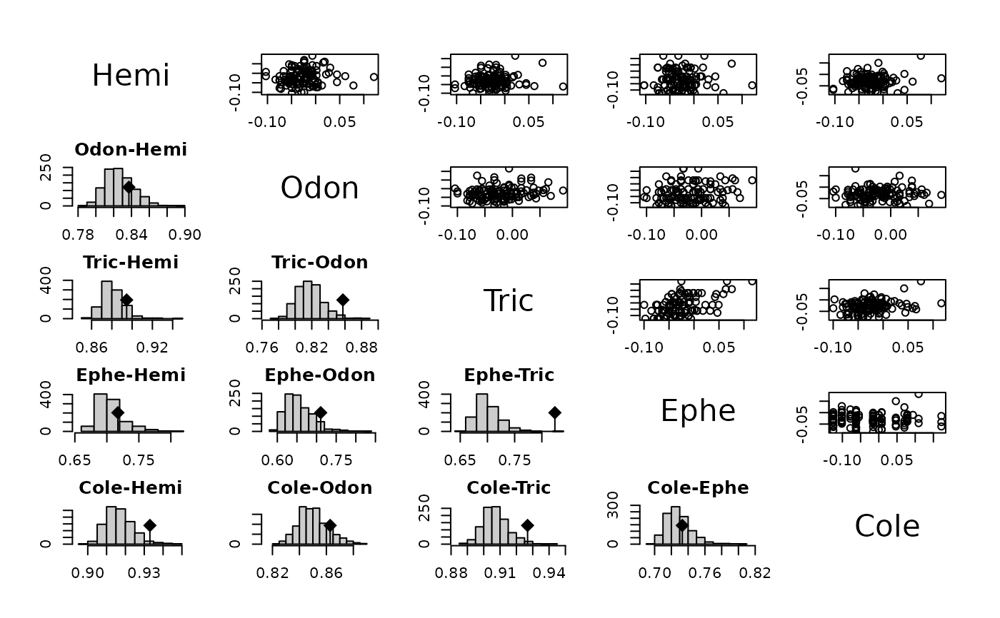
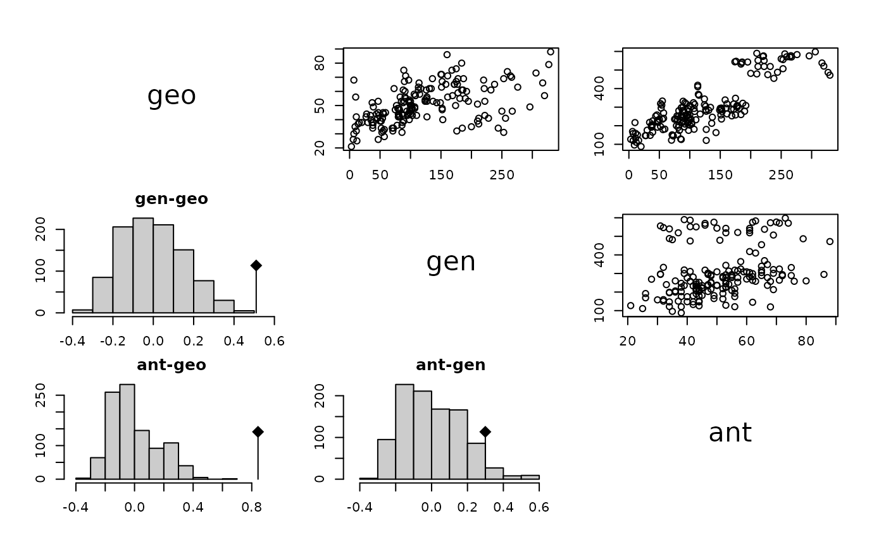

Tests of randomization between distances applied to 'kdist' objetcs
corkdist.RdThe mantelkdist and RVkdist functions apply to blocks of distance matrices the mantel.rtest and RV.rtest functions.
Usage
mantelkdist (kd, nrepet = 999, ...)
RVkdist (kd, nrepet = 999, ...)
# S3 method for class 'corkdist'
plot(x, whichinrow = NULL, whichincol = NULL,
gap = 4, nclass = 10,...)Arguments
- kd
a list of class
kdist- nrepet
the number of permutations
- x
an objet of class
corkdist, coming from RVkdist or mantelkdist- whichinrow
a vector of integers to select the graphs in rows (if NULL all the graphs are computed)
- whichincol
a vector of integers to select the graphs in columns (if NULL all the graphs are computed)
- gap
an integer to determinate the space between two graphs
- nclass
a number of intervals for the histogram
- ...
further arguments passed to or from other methods
Value
a list of class corkdist containing for each pair of distances an object of class randtest (permutation tests).
Details
The corkdist class has some generic functions print, plot and summary. The plot shows bivariate scatterplots between semi-matrices of distances or histograms of simulated values with an error position.
Author
Daniel Chessel
Stéphane Dray stephane.dray@univ-lyon1.fr
Examples
data(friday87)
fri.w <- ktab.data.frame(friday87$fau, friday87$fau.blo, tabnames = friday87$tab.names)
fri.kc <- lapply(1:10, function(x) dist.binary(fri.w[[x]], 10))
names(fri.kc) <- substr(friday87$tab.names, 1, 4)
fri.kd <- kdist(fri.kc)
#> Warning: Zero distance(s)
fri.mantel <- mantelkdist(kd = fri.kd, nrepet = 999)
plot(fri.mantel, 1:5, 1:5)

plot(fri.mantel, 1:5, 6:10)

plot(fri.mantel, 6:10, 1:5)

plot(fri.mantel, 6:10, 6:10)

s.corcircle(dudi.pca(as.data.frame(fri.kd), scan = FALSE)$co)

plot(RVkdist(fri.kd), 1:5, 1:5)
#> Warning: Zero distance(s)
#> Warning: Zero distance(s)
#> Warning: Zero distance(s)
#> Warning: Zero distance(s)
#> Warning: Zero distance(s)
#> Warning: Zero distance(s)
#> Warning: Zero distance(s)
#> Warning: Zero distance(s)
#> Warning: Zero distance(s)

data(yanomama)
m1 <- mantelkdist(kdist(yanomama), 999)
m1
#> Mantel's tests for 'kdist' object
#> class: corkdist list
#> Call: mantelkdist(kd = kdist(yanomama), nrepet = 999)
#>
#> gen-geo
#> Monte-Carlo test
#> Call: mantelkdist(kd = kdist(yanomama), nrepet = 999)
#>
#> Observation: 0.5098684
#>
#> Based on 999 replicates
#> Simulated p-value: 0.001
#> Alternative hypothesis: greater
#>
#> Std.Obs Expectation Variance
#> 3.196556810 0.001240244 0.025318383
#>
#> ant-geo
#> Monte-Carlo test
#> Call: mantelkdist(kd = kdist(yanomama), nrepet = 999)
#>
#> Observation: 0.8428053
#>
#> Based on 999 replicates
#> Simulated p-value: 0.001
#> Alternative hypothesis: greater
#>
#> Std.Obs Expectation Variance
#> 5.432687465 -0.005692316 0.024393370
#>
#> ant-gen
#> Monte-Carlo test
#> Call: mantelkdist(kd = kdist(yanomama), nrepet = 999)
#>
#> Observation: 0.2995506
#>
#> Based on 999 replicates
#> Simulated p-value: 0.051
#> Alternative hypothesis: greater
#>
#> Std.Obs Expectation Variance
#> 1.689089145 0.009678608 0.029451488
#> list of 3 'randtest' objects
summary(m1)
#> Mantel's tests for 'kdist' object
#> Call: mantelkdist(kd = kdist(yanomama), nrepet = 999)
#> Simulated p-values:
#> 1 2 3
#> geo - - -
#> gen 0.001 - -
#> ant 0.001 0.051 -
plot(m1)
